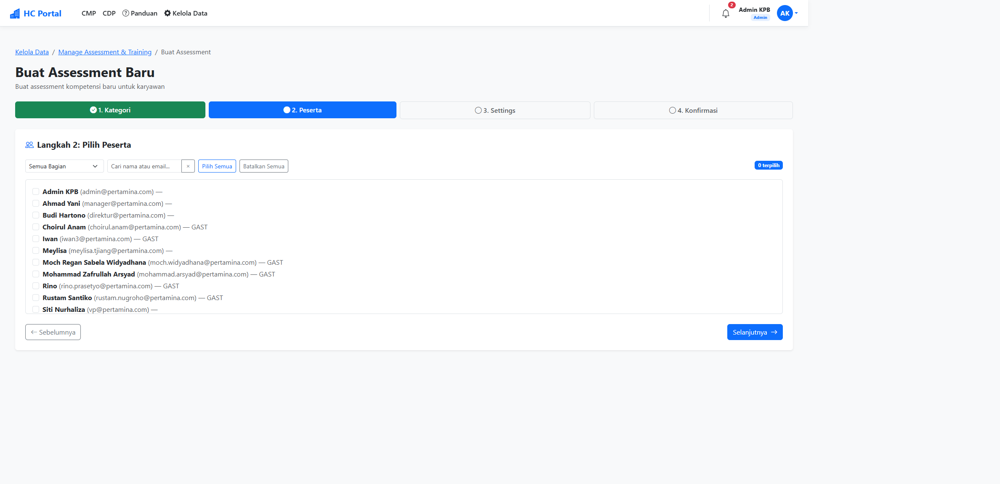
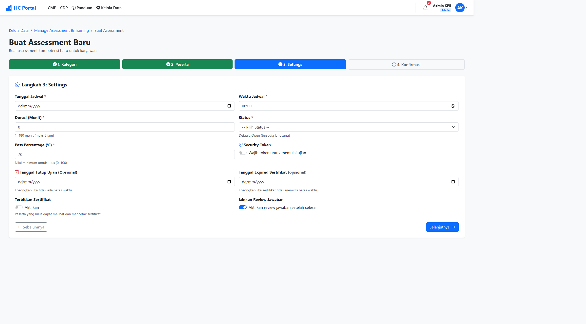
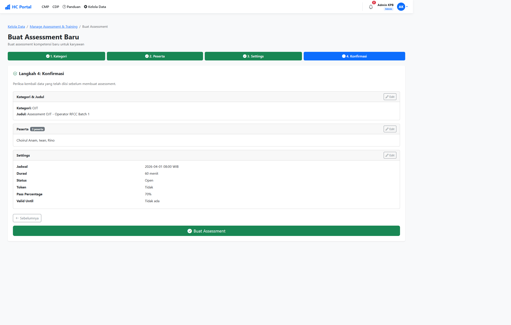
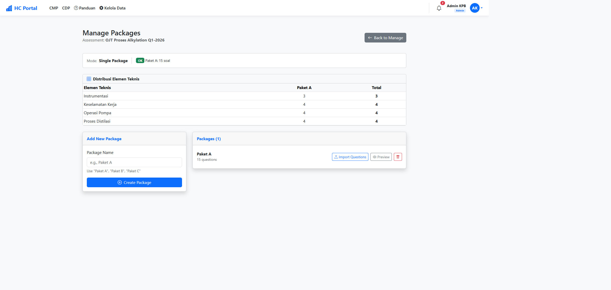
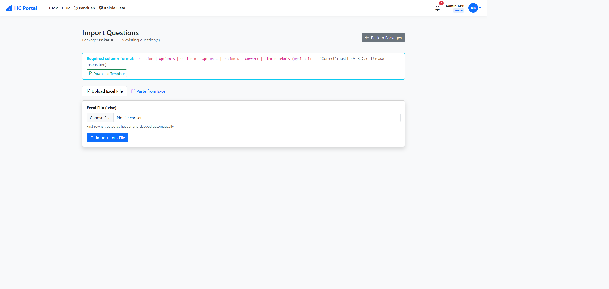
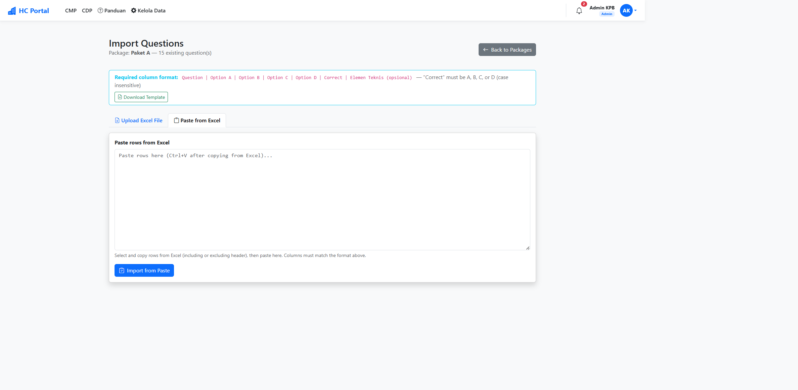
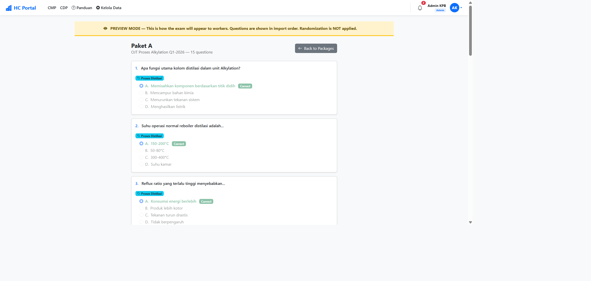

Langkah 1: Pilih kategori dan isi judul assessment
⚠ Khusus Assessment Proton
Jika kategori = "Assessment Proton", muncul field tambahan Track (Operator/Panelman, Tahun 1/2/3). Pilih sesuai penugasan coachee.
Langkah 2 — Pilih Peserta
Gunakan filter bagian (dropdown) untuk memfilter per unit kerja
Gunakan kolom pencarian untuk cari nama/email
Centang karyawan yang akan menjadi peserta (minimal 1)
Gunakan tombol Select All / Deselect All jika perlu
Klik Selanjutnya

Langkah 2: Daftar karyawan dengan checkbox, filter bagian, dan pencarian
Langkah 3 — Settings
Field
Keterangan
Tanggal & Waktu Jadwal
Kapan assessment dilaksanakan
Durasi
Waktu pengerjaan (menit), maks 480 menit
Status
Open = langsung tersedia, Upcoming = belum dibuka
Pass Percentage
Nilai minimum lulus (0–100%), otomatis terisi dari kategori
Security Token
Opsional. Aktifkan toggle → klik Generate untuk buat token 6 digit
Batas Waktu
Opsional. Tanggal terakhir bisa mengerjakan
Generate Certificate
Aktifkan agar peserta lulus bisa cetak sertifikat
Allow Answer Review
Aktifkan agar peserta bisa review jawaban setelah selesai

Langkah 3: Pengaturan jadwal, durasi, status, token, dan sertifikat
Langkah 4 — Konfirmasi & Submit
Review ringkasan: Kategori, Peserta, dan Settings
Klik "Edit" pada masing-masing card jika ada yang perlu diubah
Jika sudah benar, klik tombol hijau "Buat Assessment"
Muncul modal sukses → klik "Manage Questions" untuk lanjut ke input soal

Langkah 4: Review ringkasan dan klik "Buat Assessment"
B. Buat Paket Soal
Setelah assessment dibuat, Anda perlu membuat paket soal sebelum peserta bisa mengerjakan.
Di halaman Manage Packages, masukkan nama paket (contoh: "Paket A")
Klik "Create Package"
Ulangi jika ingin membuat lebih dari 1 paket (multi-package)

Halaman Manage Packages — form tambah paket, daftar paket, dan distribusi Elemen Teknis
💡 Single vs Multi-Package
Single Package = semua peserta dapat soal sama. Multi-Package = peserta di-assign ke paket berbeda (distribusi otomatis), cocok untuk mengurangi kecurangan.
C. Import Soal
Klik tombol "Import Questions" pada paket yang ingin diisi soal.
Format Kolom Excel
Question
Option A
Option B
Option C
Option D
Correct
Elemen Teknis
Teks soal
Jawaban A
Jawaban B
Jawaban C
Jawaban D
A/B/C/D
(opsional)
📄 Download Template
Klik tombol "Download Template" di halaman import untuk mendapatkan file Excel dengan format yang benar.
Metode 1: Upload File Excel
Pastikan tab "Upload Excel File" aktif
Klik Choose File → pilih file .xlsx
Klik "Import from File"

Tab Upload Excel File — pilih file .xlsx lalu klik "Import from File"
Metode 2: Paste dari Excel
Di Excel, blok baris-baris soal → Ctrl+C
Klik tab "Paste from Excel"
Klik di textarea → Ctrl+V
Klik "Import from Paste"

Tab Paste from Excel — paste data dari Excel lalu klik "Import from Paste"
D. Preview & Verifikasi Soal
Klik tombol "Preview" pada paket untuk melihat soal seperti yang dilihat peserta.
Yang perlu dicek:
Teks soal tidak ada typo
Semua pilihan jawaban lengkap (A, B, C, D)
Jawaban bertanda "Correct" (hijau) memang benar

Preview soal — jawaban benar ditandai hijau dengan badge "Correct"
🔄 Soal Diacak Saat Ujian
Preview menampilkan soal dalam urutan import. Saat ujian, soal akan diacak otomatis untuk setiap peserta.
Tips Penting
Siapkan file Excel soal sebelum membuat assessment agar proses lebih cepat
Untuk multi-package, pastikan jumlah soal tiap paket sama
Isi kolom Elemen Teknis untuk analisis kompetensi per area yang lebih baik
Selalu preview sebelum assessment dibuka — kesalahan jawaban benar langsung berdampak pada nilai
Gunakan status "Upcoming" untuk assessment yang belum waktunya dibuka
Token bisa di-Regenerate kapan saja dari menu Aksi di daftar assessment
Peserta tambahan bisa ditambah lewat halaman Edit Assessment